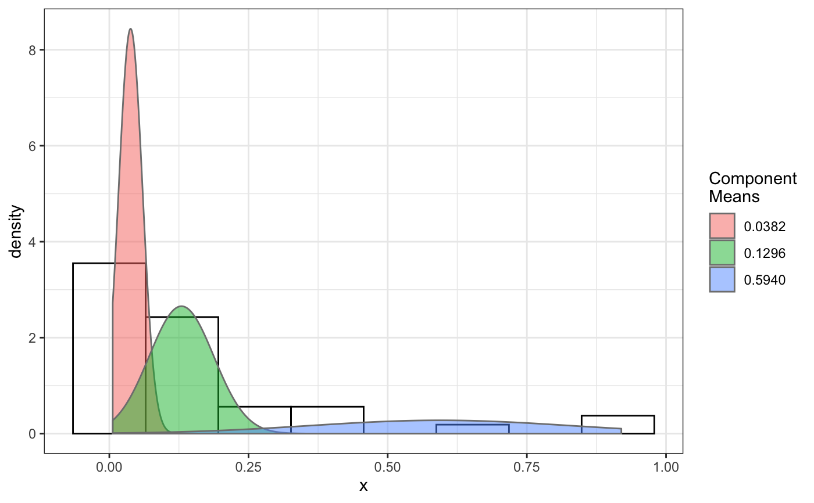
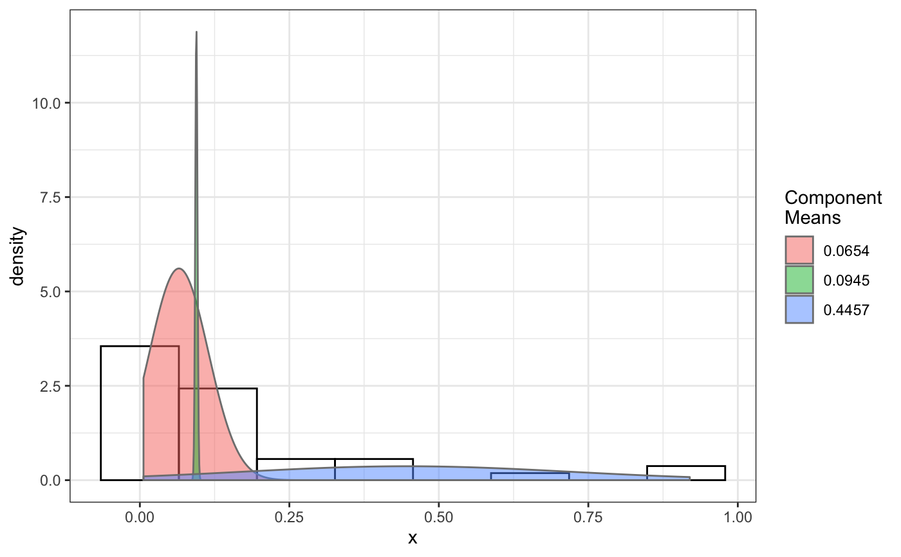
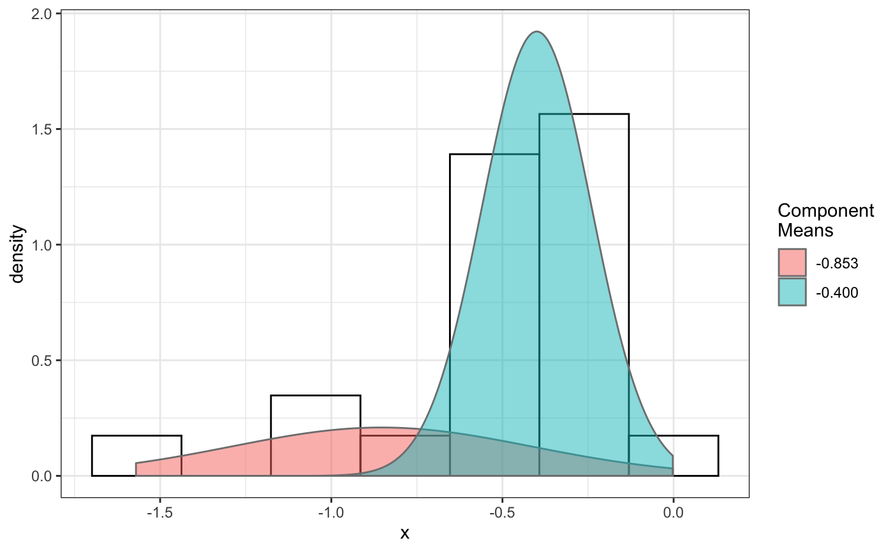
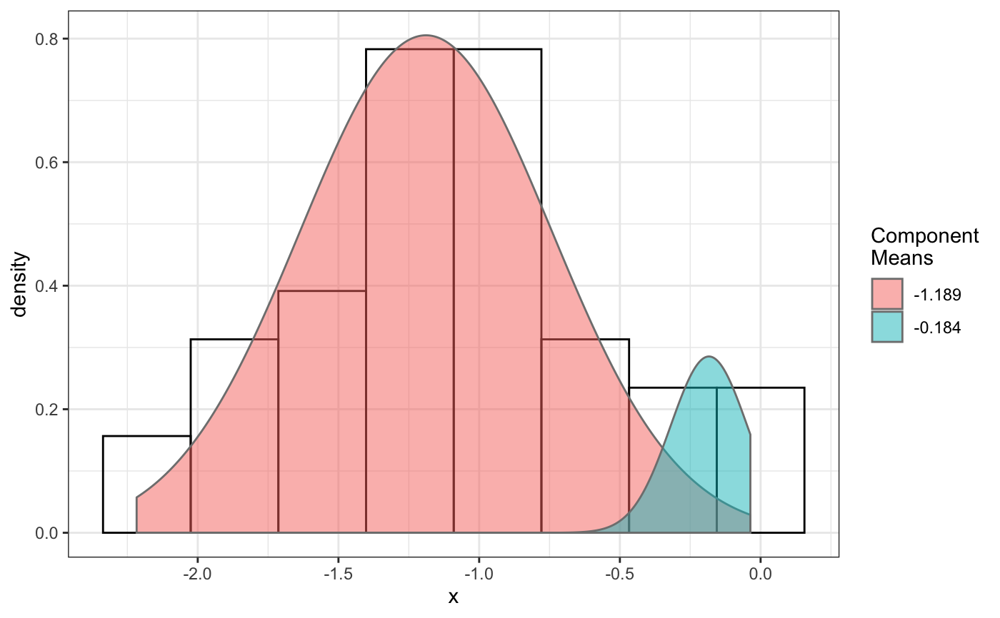
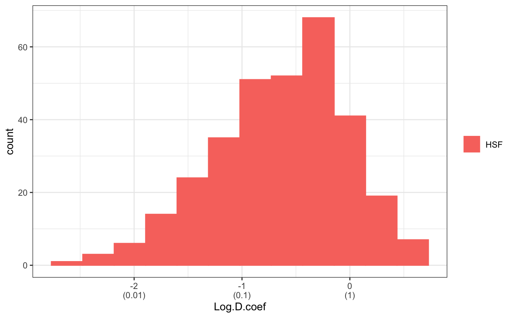
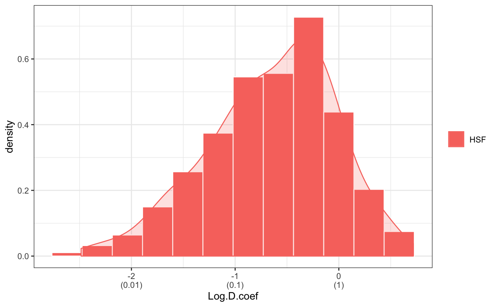
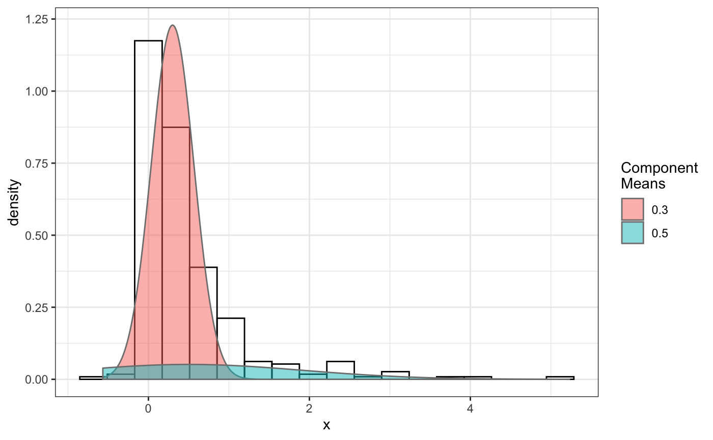

fit normal distributions to diffusion coefficient caclulated by Dcoef method and saves seed state as a attribute of the result
fitNormDistr(dcoef,components=NULL,log.transform=FALSE,binwidth=NULL, combine.plot=FALSE,output=FALSE, proportion=NULL, means=NULL, sd=NULL, constrain=FALSE)
Arguments
| sd | numeric vector with estimates of standard deviation(sigma) values for each component. |
|---|---|
| constrain | logical indicate if mean and std deviation are set to the given value. This will not work for the unimodal distribution. |
| dcoef | diffusion coefficient calculated from Dcoef(). |
| components | parameter specifying the number of components to fit. If NULL (default), a components analysis is done to determine the most likely components and this number is then used for subsequent analysis. |
| log.transform | logical indicate if log10 transformation is needed, default F. |
| binwidth | binwidth for the combined plot. If NULL (default), will automatic assign binwidth. |
| combine.plot | Logical indicate if all the plot should be combined into one, with same scale (/same axises breaks), same color theme, and same bin size for comparison. |
| output | logical indicate if output file should be generated. |
| proportion | numeric vector with estimates of each component's proportion of the whole data. |
| means | numeric vector with estimates of mean(mu) values for each component. |
Value
- proportions
The proportions of mixing components.
- mean
The Means of the components.
- sd
The Standard Deviations (SD) of components if not log transformed; if log transformed, it is then interpreted as Coefficient of Variation (CV).
- loglik
The log likelihood, useful for compare different fitting result, the bigger the better fit.
Details
Components analysis uses the likelihood ratio test (LRT) to assess the number of mixture components. Bad Random seed generation may cause normalmixEM to crash. Using another seed will solve the issue.
Note: Ensure that a random number generator seed has been manually set! The seed is stored as an attribute of the returned object of fitNormDistr() and using the same seed makes results repeatable (see examples).
Examples
# compare folders folder1=system.file("extdata","SWR1",package="sojourner") folder2=system.file("extdata","HTZ1",package="sojourner") trackll=compareFolder(folders=c(folder1,folder2), input=3)#> #> Reading ParticleTracker file: SWR1_WT_140mW_image6.csv ... #> #> mage6 read and processed. #> #> Process complete. #> #> Merging of folder SWR1 complete. #> #> ... #> #> Reading ParticleTracker file: HTZ1_140mW_WT.csv ... #> #> mW_WT read and processed. #> #> Process complete. #> #> Merging of folder HTZ1 complete. #> #> ...#> applying filter, min 7 max Inf #> 45 tracks length > & = 1 45 tracks length > & = 2 45 tracks length > & = 3 45 tracks length > & = 4 45 tracks length > & = 5 45 tracks length > & = 6 #> #> ... #> 122 tracks length > & = 1 122 tracks length > & = 2 122 tracks length > & = 3 122 tracks length > & = 4 122 tracks length > & = 5 122 tracks length > & = 6 #> #> ...#> #> applying static,lag.start= 2 lag.end= 5 #> lag.start 2 lag.end 5 #> #> Applying r square filter... 0.8#> Warning: NaNs produced#> #> Plotting histogram... #> auto binwidth = 0.3691397#> Warning: Removed 3 rows containing non-finite values (stat_bin).#> #> Plotting density... #> auto binwidth = 0.3691397#> Warning: Removed 3 rows containing non-finite values (stat_bin).#> Warning: Removed 3 rows containing non-finite values (stat_density).# set unique seed (use any number) set.seed(123) # fit dcoef (function automatically saves seed state as an attribute of # the result) a=fitNormDistr(dcoef,components=NULL,log.transform=FALSE, combine.plot=FALSE, output=FALSE)#> #> IMPORTANT: Ensure a seed has been manually set! See help docs for more info. #> #> components analysis #> bootstrapping LRTS ... #> | | | 0% | | | 1% | |= | 1% | |= | 2% | |== | 2% | |== | 3% | |== | 4% | |=== | 4% | |=== | 5% | |==== | 5% | |==== | 6% | |===== | 6% | |===== | 7% | |===== | 8% | |====== | 8% | |====== | 9% | |======= | 9% | |======= | 10% | |======= | 11% | |======== | 11% | |======== | 12% | |========= | 12% | |========= | 13% | |========= | 14% | |========== | 14% | |========== | 15% | |=========== | 15% | |=========== | 16% | |============ | 16% | |============ | 17% | |============ | 18% | |============= | 18% | |============= | 19% | |============== | 19% | |============== | 20% | |============== | 21% | |=============== | 21% | |=============== | 22% | |================ | 22% | |================ | 23% | |================ | 24% | |================= | 24% | |================= | 25% | |================== | 25% | |================== | 26% | |=================== | 26% | |=================== | 27% | |=================== | 28% | |==================== | 28% | |==================== | 29% | |===================== | 29% | |===================== | 30% | |===================== | 31% | |====================== | 31% | |====================== | 32% | |======================= | 32% | |======================= | 33% | |======================= | 34% | |======================== | 34% | |======================== | 35% | |========================= | 35% | |========================= | 36% | |========================== | 36% | |========================== | 37% | |========================== | 38% | |=========================== | 38% | |=========================== | 39% | |============================ | 39% | |============================ | 40% | |============================ | 41% | |============================= | 41% | |============================= | 42% | |============================== | 42% | |============================== | 43% | |============================== | 44% | |=============================== | 44% | |=============================== | 45% | |================================ | 45% | |================================ | 46% | |================================= | 46% | |================================= | 47% | |================================= | 48% | |================================== | 48% | |================================== | 49% | |=================================== | 49% | |=================================== | 50% | |======================================================================| 100% #> ------------------------------------------------------------- #> Bootstrap sequential LRT for the number of mixture components #> ------------------------------------------------------------- #> Model = V #> Replications = 999 #> LRTS bootstrap p-value #> 1 vs 2 2.206494 0.712 #> #> #> most likely components 1 at significant level 0.05 #>#> Warning: row names were found from a short variable and have been discarded#> auto binwidth = 0.2157974#> #> components analysis #> bootstrapping LRTS ... #> | | | 0% | | | 1% | |= | 1% | |= | 2% | |== | 2% | |== | 3% | |== | 4% | |=== | 4% | |=== | 5% | |==== | 5% | |==== | 6% | |===== | 6% | |===== | 7% | |===== | 8% | |====== | 8% | |====== | 9% | |======= | 9% | |======= | 10% | |======= | 11% | |======== | 11% | |======== | 12% | |========= | 12% | |========= | 13% | |========= | 14% | |========== | 14% | |========== | 15% | |=========== | 15% | |=========== | 16% | |============ | 16% | |============ | 17% | |============ | 18% | |============= | 18% | |============= | 19% | |============== | 19% | |============== | 20% | |============== | 21% | |=============== | 21% | |=============== | 22% | |================ | 22% | |================ | 23% | |================ | 24% | |================= | 24% | |================= | 25% | |================== | 25% | |================== | 26% | |=================== | 26% | |=================== | 27% | |=================== | 28% | |==================== | 28% | |==================== | 29% | |===================== | 29% | |===================== | 30% | |===================== | 31% | |====================== | 31% | |====================== | 32% | |======================= | 32% | |======================= | 33% | |======================= | 34% | |======================== | 34% | |======================== | 35% | |========================= | 35% | |========================= | 36% | |========================== | 36% | |========================== | 37% | |========================== | 38% | |======================================================================| 100% #> ------------------------------------------------------------- #> Bootstrap sequential LRT for the number of mixture components #> ------------------------------------------------------------- #> Model = V #> Replications = 999 #> LRTS bootstrap p-value #> 1 vs 2 54.903376 0.001 #> 2 vs 3 11.668292 0.032 #> 3 vs 4 5.306087 0.316 #> #> #> most likely components 3 at significant level 0.05 #> #> number of iterations= 47 #> summary of normalmixEM object: #> comp 1 comp 2 comp 3 #> lambda 0.4521237 0.3866271 0.161249 #> mu 0.0382022 0.1295981 0.594011 #> sigma 0.0213759 0.0580878 0.232064 #> loglik at estimate: 37.52117 #> NULL #> auto binwidth = 0.1305189 #> #> approximating standard error by parametic bootstrap... #>#> $SWR1 #> [,1] #> proportion 1.00000000 #> mean 0.32091361 #> sd 0.05036344 #> log.lik -0.99716894 #> #> $HTZ1 #> [,1] [,2] [,3] #> proportion 0.45212371 0.38662708 0.1612492 #> mean 0.03820217 0.12959811 0.5940109 #> sd 0.02137587 0.05808778 0.2320640 #> log.lik 37.52117306 37.52117306 37.5211731 #># to repeat results of 'a', load seed attribute of a into RNG state .Random.seed=attr(a,"seed") # or, reset the seed with same unique number # set.seed(123) b=fitNormDistr(dcoef,components=NULL,log.transform=FALSE, combine.plot=FALSE,output=FALSE)#> #> IMPORTANT: Ensure a seed has been manually set! See help docs for more info. #> #> components analysis #> bootstrapping LRTS ... #> | | | 0% | | | 1% | |= | 1% | |= | 2% | |== | 2% | |== | 3% | |== | 4% | |=== | 4% | |=== | 5% | |==== | 5% | |==== | 6% | |===== | 6% | |===== | 7% | |===== | 8% | |====== | 8% | |====== | 9% | |======= | 9% | |======= | 10% | |======= | 11% | |======== | 11% | |======== | 12% | |========= | 12% | |========= | 13% | |========= | 14% | |========== | 14% | |========== | 15% | |=========== | 15% | |=========== | 16% | |============ | 16% | |============ | 17% | |============ | 18% | |============= | 18% | |============= | 19% | |============== | 19% | |============== | 20% | |============== | 21% | |=============== | 21% | |=============== | 22% | |================ | 22% | |================ | 23% | |================ | 24% | |================= | 24% | |================= | 25% | |================== | 25% | |================== | 26% | |=================== | 26% | |=================== | 27% | |=================== | 28% | |==================== | 28% | |==================== | 29% | |===================== | 29% | |===================== | 30% | |===================== | 31% | |====================== | 31% | |====================== | 32% | |======================= | 32% | |======================= | 33% | |======================= | 34% | |======================== | 34% | |======================== | 35% | |========================= | 35% | |========================= | 36% | |========================== | 36% | |========================== | 37% | |========================== | 38% | |=========================== | 38% | |=========================== | 39% | |============================ | 39% | |============================ | 40% | |============================ | 41% | |============================= | 41% | |============================= | 42% | |============================== | 42% | |============================== | 43% | |============================== | 44% | |=============================== | 44% | |=============================== | 45% | |================================ | 45% | |================================ | 46% | |================================= | 46% | |================================= | 47% | |================================= | 48% | |================================== | 48% | |================================== | 49% | |=================================== | 49% | |=================================== | 50% | |======================================================================| 100% #> ------------------------------------------------------------- #> Bootstrap sequential LRT for the number of mixture components #> ------------------------------------------------------------- #> Model = V #> Replications = 999 #> LRTS bootstrap p-value #> 1 vs 2 2.206494 0.718 #> #> #> most likely components 1 at significant level 0.05 #>#> Warning: row names were found from a short variable and have been discarded#> auto binwidth = 0.2157974#> #> components analysis #> bootstrapping LRTS ... #> | | | 0% | | | 1% | |= | 1% | |= | 2% | |== | 2% | |== | 3% | |== | 4% | |=== | 4% | |=== | 5% | |==== | 5% | |==== | 6% | |===== | 6% | |===== | 7% | |===== | 8% | |====== | 8% | |====== | 9% | |======= | 9% | |======= | 10% | |======= | 11% | |======== | 11% | |======== | 12% | |========= | 12% | |========= | 13% | |========= | 14% | |========== | 14% | |========== | 15% | |=========== | 15% | |=========== | 16% | |============ | 16% | |============ | 17% | |============ | 18% | |============= | 18% | |============= | 19% | |============== | 19% | |============== | 20% | |============== | 21% | |=============== | 21% | |=============== | 22% | |================ | 22% | |================ | 23% | |================ | 24% | |================= | 24% | |================= | 25% | |================== | 25% | |================== | 26% | |=================== | 26% | |=================== | 27% | |=================== | 28% | |==================== | 28% | |==================== | 29% | |===================== | 29% | |===================== | 30% | |===================== | 31% | |====================== | 31% | |====================== | 32% | |======================= | 32% | |======================= | 33% | |======================= | 34% | |======================== | 34% | |======================== | 35% | |========================= | 35% | |========================= | 36% | |========================== | 36% | |========================== | 37% | |========================== | 38% | |======================================================================| 100% #> ------------------------------------------------------------- #> Bootstrap sequential LRT for the number of mixture components #> ------------------------------------------------------------- #> Model = V #> Replications = 999 #> LRTS bootstrap p-value #> 1 vs 2 54.903376 0.001 #> 2 vs 3 11.668292 0.031 #> 3 vs 4 5.306087 0.313 #> #> #> most likely components 3 at significant level 0.05 #> #> number of iterations= 115 #> summary of normalmixEM object: #> comp 1 comp 2 comp 3 #> lambda 0.6910232 0.05613766 0.252839 #> mu 0.0653734 0.09450304 0.445668 #> sigma 0.0491526 0.00186522 0.273421 #> loglik at estimate: 32.80159 #> NULL #> auto binwidth = 0.1305189 #> #> approximating standard error by parametic bootstrap... #>#> $SWR1 #> [,1] #> proportion 1.00000000 #> mean 0.32091361 #> sd 0.05036344 #> log.lik -0.99716894 #> #> $HTZ1 #> [,1] [,2] [,3] #> proportion 0.69102318 0.056137661 0.2528392 #> mean 0.06537345 0.094503038 0.4456678 #> sd 0.04915263 0.001865218 0.2734207 #> log.lik 32.80158504 32.801585045 32.8015850 #>#> x lambda mu sigma loglik restarts ft posterior #> TRUE TRUE TRUE TRUE TRUE TRUE TRUE TRUE#try with log transformation set.seed(234) c=fitNormDistr(dcoef,components=2,log.transform=TRUE,combine.plot=FALSE, output=FALSE)#> #> IMPORTANT: Ensure a seed has been manually set! See help docs for more info.#> Warning: NaNs produced#> number of iterations= 102 #> summary of normalmixEM object: #> comp 1 comp 2 #> lambda 0.230267 0.769733 #> mu -0.853160 -0.399750 #> sigma 0.439270 0.159799 #> loglik at estimate: -1.451852 #> NULL #> auto binwidth = 0.2613932 #> #> approximating standard error by parametic bootstrap... #>#> number of iterations= 788 #> summary of normalmixEM object: #> comp 1 comp 2 #> lambda 0.902626 0.0973738 #> mu -1.188965 -0.1835330 #> sigma 0.447106 0.1361099 #> loglik at estimate: -30.07852 #> NULL #> auto binwidth = 0.3115359 #> #> approximating standard error by parametic bootstrap... #>#> $SWR1 #> [,1] [,2] #> proportion 0.2302668 0.7697332 #> mean -0.8531602 -0.3997502 #> sd 0.4392698 0.1597992 #> log.lik -1.4518518 -1.4518518 #> #> $HTZ1 #> [,1] [,2] #> proportion 0.9026262 0.09737382 #> mean -1.1889652 -0.18353299 #> sd 0.4471058 0.13610994 #> log.lik -30.0785214 -30.07852137 #># trying with some parameters provided(this will be applied to all dcoef # results). # with constrain = FALSE, this will be used as the starting values for the # EM-algorithm # normally we should deal with only one dataset when working with # constrains, since it will apply to all of them. folder3=system.file("extdata","HSF", package="sojourner") trackll=compareFolder(c(folder3),input=3)#> #> Reading ParticleTracker file: HSF-Halo_1.csv ... #> #> alo_1 read and processed. #> #> Reading ParticleTracker file: HSF-Halo_2.csv ... #> #> alo_2 read and processed. #> #> Process complete. #> #> Merging of folder HSF complete. #> #> ...#> applying filter, min 7 max Inf #> 560 tracks length > & = 1 560 tracks length > & = 2 560 tracks length > & = 3 560 tracks length > & = 4 560 tracks length > & = 5 560 tracks length > & = 6 #> #> ...#> #> applying static,lag.start= 2 lag.end= 5 #> lag.start 2 lag.end 5 #> #> Applying r square filter... 0.8#> Warning: NaNs produced#> #> Plotting histogram... #> auto binwidth = 0.291253#> Warning: Removed 11 rows containing non-finite values (stat_bin).#> #> Plotting density... #> auto binwidth = 0.291253#> Warning: Removed 11 rows containing non-finite values (stat_bin).#> Warning: Removed 11 rows containing non-finite values (stat_density).# try with constrain=TRUE, the values will be forced to equal the provided # ones. set.seed(345) e=fitNormDistr(dcoef,means=c(0.3,0.5), constrain=TRUE)#> #> IMPORTANT: Ensure a seed has been manually set! See help docs for more info. #> number of iterations= 38 #> summary of normalmixEM object: #> comp 1 comp 2 #> lambda 0.816955 0.183045 #> mu 0.300000 0.500000 #> sigma 0.265222 1.414329 #> loglik at estimate: -211.7654 #> NULL #> auto binwidth = 0.3410255 #> #> approximating standard error by parametic bootstrap... #>#> $HSF #> [,1] [,2] #> proportion 0.8169554 0.1830446 #> mean 0.3000000 0.5000000 #> sd 0.2652217 1.4143286 #> log.lik -211.7654007 -211.7654007 #>